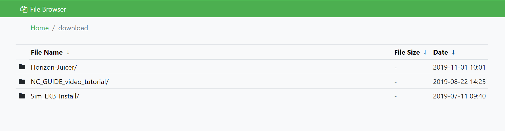
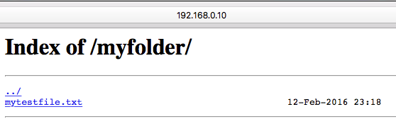

fancyindex 插件模块美化 nginx 的默认 index 页面

使用 nginx 的 autoindex 模块可以搭建简单的文件分享页面，但默认的页面比较简陋：

autoindex 搭建教程参考：https://niekun.net/index.php/archives/26.html
如果需要更加美观和丰富的页面，可以使用第三方模块 fancyindex 来实现。
fancyindex GitHub 主页：https://github.com/aperezdc/ngx-fancyindex#fancyindex-time-format
The Fancy Index module makes possible the generation of file listings, like the built-in autoindex module does, but adding a touch of style.
安装
使用 fancyindex 首先需要安装带有 fancyindex 模块的 nginx，需要在编译 nginx 的时候加载 fancyindex 源码作为 add-module。
从源码编译 nginx 及加载 第三方模块教程参考：https://niekun.net/index.php/archives/30.html
查看当前安装 nginx 是否包含 fancyindex：
nginx -V
使用
使用方法很简单，在需要作为共享目录的 location 段，修改如下：
location /shared {
fancyindex on; # Enable fancy indexes.
fancyindex_exact_size off; # Output human-readable file sizes.
}重新加载配置查看效果：
service nginx reload
使用自定义配置美化页面
由于 fancyindex 支持自定义页眉页脚和主题风格，所以可以使用 html 来进行修饰。
我的主题：https://github.com/nie11kun/FancyIndexTheme
下载主题到服务器，我放置在：/home/www/FancyIndexTheme
新建 fancyindex 的配置文件：fancyindex，我放在 /etc/nginx/my-server/fancyindex，内容如下：
fancyindex on;
fancyindex_header "/FancyIndexTheme/header.html";
fancyindex_footer "/FancyIndexTheme/footer.html";
fancyindex_show_path off;
fancyindex_name_length 255;
fancyindex_exact_size off;
fancyindex_localtime on;
fancyindex_time_format "%Y-%m-%d %H:%M";详细的配置参数使用方法参考：https://github.com/aperezdc/ngx-fancyindex#fancyindex-time-format
在 nginx 配置文件中，需要作为共享文件夹的路径如 download 修改如下：
location /download {
root /home/www;
include my-server/fancyindex;
}在 nginx 配置文件中，配置外部 html 配置页面文件夹访问路径，我的主题文件夹路径为 /home/www/FancyIndexTheme：
location /FancyIndexTheme {
root /home/www;
}重新加载配置文件：
service nginx configtest
service nginx reload
现在可以打开共享页面查看效果。